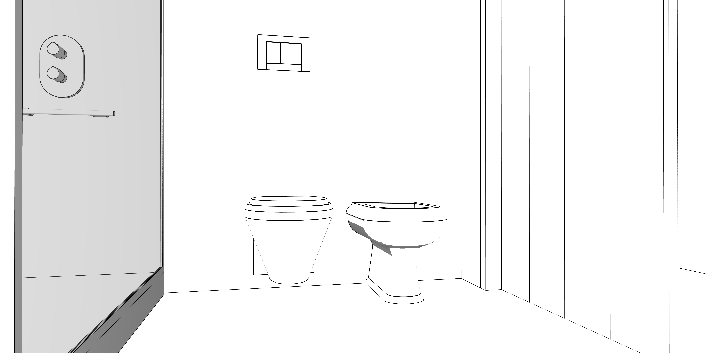

Bagno

L'uso di porte pieghevoli nel bagno può ridurre l'uso della porta e facilitare l'accesso.Anche separare il bagno dal lavabo.
La toilette è separata dal lavandino dalla separazione asciutta e bagnata.
[Close]